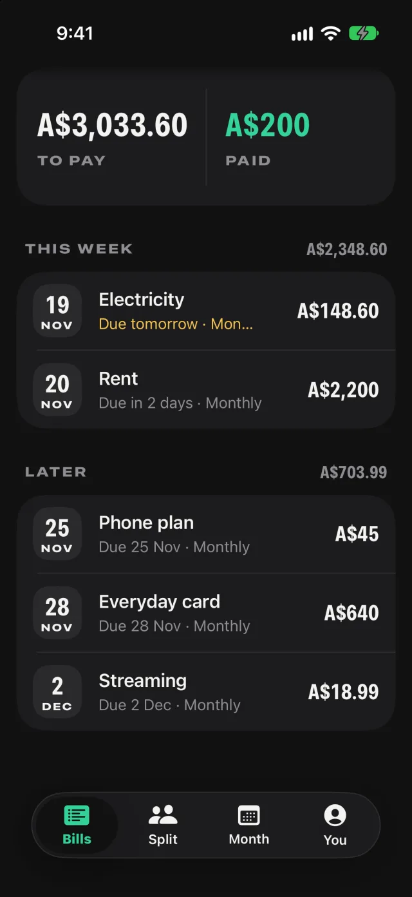
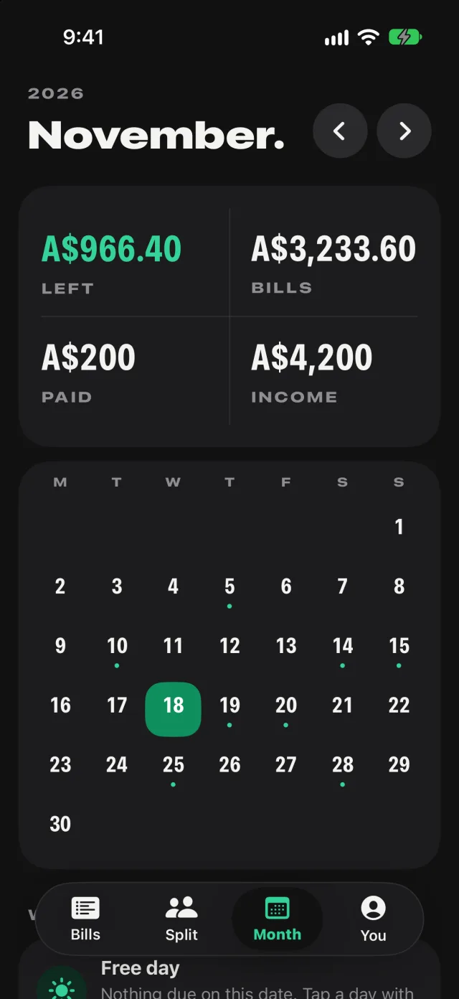

Next bill first
Home leads with the next bill as one big card. Slide to mark it paid, and a repeating bill creates its next one automatically.
A bill tracker for iPhone. It reminds you before a bill is due and keeps reminding you until it's paid. I designed it and built it natively in SwiftUI.



Paidly answers three questions at a glance: what's due, when, and has it been paid? It records payments; it never moves money or connects to a bank.
Home leads with the next bill as one big card. Slide to mark it paid, and a repeating bill creates its next one automatically.
Alerts start a few days before the due date and repeat daily until the bill is marked paid, right from the notification.
What's left, what's paid and income for the month, with a calendar that marks every due date.
Share a bill with a family group, split it equally or by amount, and track who has settled up.
Home and lock screen widgets show what's due next. A separate Apple Watch app works on its own.
Bills stay on the phone without an account. Signing in syncs them to the web, Android and Watch apps.

Emerald is the only accent. Late bills turn orange, never red, so a missed bill feels fixable rather than alarming.
Amounts use SF Pro Compressed at a huge size. Labels are small spaced capitals, so the number always reads first.
Bills, Split, Month and You. History and settings live inside You instead of taking more tabs.
SwiftUI with no third-party packages, iOS 18 and later. Local notifications with a Mark as paid action, WidgetKit widgets, haptics and sounds that respect Reduce Motion.
Supabase and PostgreSQL with row-level security, so personal bills stay private and shared bills are visible only to the family group. Revision checks stop an old edit overwriting a newer one.
Swift · SwiftUI · WidgetKit · Supabase · PostgreSQL. Notification delivery still needs testing on physical devices.